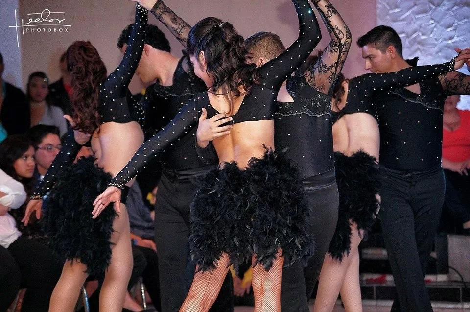

Keep dancing.

Contactanos
Aprende
ahora
Get to know all the members of our family, what they like and why they dance.
We consied ourselves not just a super team, but a real family, taking care of each other.
Join the family.

Ver mas.
Familia
Get to know all the members of our family, what they like and why they dance.
We consied ourselves not just a super team, but a real family, taking care of each other.
Join the family.

Priximos
Eventos
Get to know all the members of our family, what they like and why they dance.
We consied ourselves not just a super team, but a real family, taking care of each other.
Join the family.